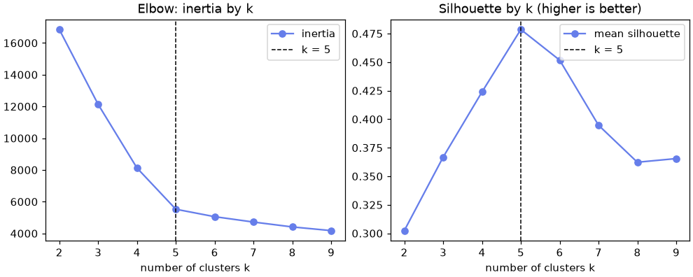
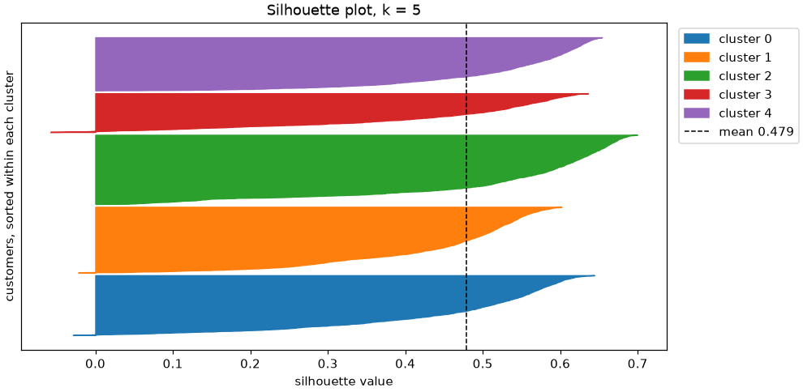

📐 Lesson 8.2: Choosing k and Customer Segments
Decide how many clusters your data really supports, check that they are stable, and turn them into customer segments a marketing team can act on.
🎯 Learning Objectives
By the end of this lesson, you will be able to:
- Read an elbow plot and explain why inertia alone cannot choose k
- Compute and interpret silhouette scores, overall and per cluster, from the formula and with scikit-learn
- Test whether clusters are stable by refitting on resampled data and comparing labelings with the adjusted Rand index
- Build a reusable clustering pipeline (log transform, scaling, K-Means) and use
MiniBatchKMeanswhen data gets large - Profile, name and size segments, link them to an outcome such as churn, and write recommendations with honest limits
In This Lesson
🧭 No Answer Key: How Do You Choose k?
In Lesson 8.1 the marketing team guessed five groups and K-Means obliged. It would have obliged just as happily with three or twelve. In supervised learning you pick settings by checking predictions against known answers; in clustering there are no answers. So how do you decide how many groups the data supports?
💡 Mental Model: Sorting the Returns Pile
Imagine the back room at a Pinecrest store, piled with returned gear that needs sorting into bins. With two bins, tents end up next to socks: each bin is a jumble. With fifty bins, near-identical headlamps end up in different bins and nobody can find anything. A good number of bins has two qualities at once: things in the same bin are alike (cohesion), and things in different bins are clearly different (separation). A third quality matters too: if a colleague sorted the same pile, they would come up with much the same bins (stability). And the bins have to be useful to whoever unpacks them.
No single number captures all of that, so you collect several kinds of evidence and look for agreement:
This lesson works through each kind of evidence on the same four Pinecrest behavior columns as Lesson 8.1, then turns the chosen clusters into segments. Along the way it covers the practical side: preparing skewed features, and clustering data too large for plain KMeans.
🧪 Prepare the Features: Skew, Logs and Scale
Start where Lesson 8.1 ended: four behavior columns. Before choosing k, look at their shape. K-Means works with means and squared distances, so a long right tail (a few customers with huge values) pulls centers toward the tail and stretches distances there.
import numpy as np
import pandas as pd
import matplotlib.pyplot as plt
from sklearn.cluster import KMeans
pd.set_option("display.width", 120)
customers = pd.read_csv("data/customers_churn.csv")
behavior = ["orders_12m", "avg_order_value", "discount_share", "return_rate"]
X = customers[behavior]
print(X.skew().round(2))Output
orders_12m 0.92
avg_order_value 1.59
discount_share 1.18
return_rate 1.80
dtype: float64Skewness is 0 for a symmetric column; above 1 means a long right tail. Counts and money are the classic right-skewed columns, and a logarithm is the classic cure: it turns "twice as much" into "one step more", whether that is $50 to $100 or $300 to $600. That is usually how customers differ in practice. The two share columns are skewed too, but they are bounded between 0 and 1 and their high values (heavy discount use, many returns) are exactly what you want the clustering to notice, so leave them as they are.
Put the log and the scaler in a pipeline, so that new customers later go through exactly the same steps. ColumnTransformer applies the log to two columns and passes the others through, and set_output(transform="pandas") keeps the column names:
from sklearn.compose import ColumnTransformer
from sklearn.pipeline import make_pipeline
from sklearn.preprocessing import FunctionTransformer, StandardScaler
log_some = ColumnTransformer(
[("log", FunctionTransformer(np.log, feature_names_out="one-to-one"), ["orders_12m", "avg_order_value"])],
remainder="passthrough", verbose_feature_names_out=False,
)
prep = make_pipeline(log_some, StandardScaler()).set_output(transform="pandas")
Z = prep.fit_transform(X)
print(Z.skew().round(2))
print(Z.head(3).round(2))Output
orders_12m -0.19
avg_order_value 0.69
discount_share 1.18
return_rate 1.80
dtype: float64
orders_12m avg_order_value discount_share return_rate
0 1.45 0.40 -0.13 0.85
1 1.57 -0.69 -0.65 -0.69
2 -0.99 1.56 -0.53 -0.78The order count is now nearly symmetric and the order value much less skewed. np.log is safe here because both columns are at least 1 (if a column can be 0, use np.log1p). Everything below clusters Z.
📉 The Elbow Method
Exercise 1 of Lesson 8.1 showed that inertia always falls as k grows, so its minimum is useless. Its shape is not. While each extra cluster splits a genuine group, inertia drops a lot; once the real groups are all found, extra clusters only split groups that belong together, and the drops become small. The bend between those two phases is the elbow.
This loop fits K-Means for k from 2 to 9 and keeps each fitted model, so later sections can reuse them. It also computes the silhouette score, explained in the next section.
from sklearn.metrics import silhouette_score
fits, rows = {}, []
for k in range(2, 10):
fits[k] = KMeans(n_clusters=k, n_init=10, random_state=42).fit(Z)
rows.append({"k": k, "inertia": fits[k].inertia_, "silhouette": silhouette_score(Z, fits[k].labels_)})
scores = pd.DataFrame(rows).set_index("k")
scores["drop"] = -scores["inertia"].diff()
print(scores.round({"inertia": 0, "silhouette": 3, "drop": 0}))Output
inertia silhouette drop
k
2 16849.0 0.302 NaN
3 12131.0 0.367 4718.0
4 8124.0 0.424 4008.0
5 5525.0 0.479 2599.0
6 5055.0 0.452 470.0
7 4717.0 0.395 338.0
8 4409.0 0.362 307.0
9 4178.0 0.365 232.0fig, axes = plt.subplots(1, 2, figsize=(9, 3.6), layout="constrained")
axes[0].plot(scores.index, scores["inertia"], marker="o", color="#667eea", label="inertia")
axes[0].set_title("Elbow: inertia by k")
axes[1].plot(scores.index, scores["silhouette"], marker="o", color="#667eea", label="mean silhouette")
axes[1].set_title("Silhouette by k (higher is better)")
for ax in axes:
ax.axvline(5, color="black", linestyle="--", linewidth=1, label="k = 5")
ax.set_xlabel("number of clusters k")
ax.legend()
plt.show()
Here the elbow is unusually clear: going from four to five clusters removes about 2,600 units of inertia, going from five to six only about 470. On a lot of real data the curve bends gently and two people will point at different elbows. That is why the elbow is a first look, never the whole decision.
🌗 Silhouette Scores: Tight Inside, Far Apart
The silhouette turns the two qualities of good bins, cohesion and separation, into a number for every single point:
- a = the point's average distance to the other members of its own cluster (small is good)
- b = its average distance to the members of the nearest other cluster (large is good)
s = (b − a) / max(a, b)
The score runs from −1 to 1. Near 1: the point sits snugly in its cluster, far from the next one. Near 0: it is on the border. Negative: it is closer, on average, to another cluster than to its own, which suggests it was misassigned. A tiny example you can check by hand: points 1, 2 and 3 in one cluster, 8 and 9 in another.
from sklearn.metrics import silhouette_samples
tiny = np.array([[1], [2], [3], [8], [9]])
tiny_labels = [0, 0, 0, 1, 1]
print(silhouette_samples(tiny, tiny_labels).round(3))Output
[0.8 0.846 0.727 0.833 0.857]For the point 1: its cluster mates are 1 and 2 away, so a = 1.5; the other cluster is 7 and 8 away, so b = 7.5; s = (7.5 − 1.5) / 7.5 = 0.8. The point 3 scores lowest of its cluster because it is the closest to the other group. silhouette_score is simply the mean of all the per-point values, and on the customers it peaked at k = 5 (0.479).
👀 Looking Inside the Average
An average can hide a bad cluster. The silhouette plot sorts each cluster's per-point scores and draws them as a band, so you can see whether every cluster is solid or one is mostly border points:
best = fits[5]
sil = silhouette_samples(Z, best.labels_)
print(pd.Series(sil).groupby(best.labels_).agg(["size", "mean", "min"]).round(3))
print(f"customers with a negative silhouette: {(sil < 0).sum()}")
fig, ax = plt.subplots(figsize=(9, 4.4), layout="constrained")
bottom = 0
for c in range(5):
vals = np.sort(sil[best.labels_ == c])
ax.fill_betweenx(np.arange(bottom, bottom + len(vals)), 0, vals, color=plt.cm.tab10(c), label=f"cluster {c}")
bottom += len(vals) + 60
ax.axvline(sil.mean(), color="black", linestyle="--", linewidth=1, label=f"mean {sil.mean():.3f}")
ax.set_xlabel("silhouette value")
ax.set_ylabel("customers, sorted within each cluster")
ax.set_yticks([])
ax.legend(loc="upper left", bbox_to_anchor=(1.01, 1))
ax.set_title("Silhouette plot, k = 5")
plt.show()Output
size mean min
0 1253 0.458 -0.029
1 1374 0.440 -0.022
2 1449 0.528 0.011
3 811 0.429 -0.058
4 1113 0.521 0.001
customers with a negative silhouette: 35
💡 What Counts as a Good Silhouette?
Rough guide for the mean: above 0.7 strong, 0.5 to 0.7 reasonable, 0.25 to 0.5 weak but possibly real, below 0.25 little structure. Customer data rarely forms crisp islands, so 0.48 is a respectable score, not a disappointing one. Compare silhouettes between values of k or between feature choices on the same data; comparing them across different datasets says little.
⚠️ The Cost of a Silhouette
The score compares every point with every other point, so the work grows with the square of the number of rows: 6,000 customers means 36 million distances, which is fine; 1,000,000 customers means a trillion, which is not. For large data pass sample_size=10_000, random_state=42 to silhouette_score to score a random sample. Exercise 2 checks how close that estimate is.
🔁 Stability: Do the Groups Survive Resampling?
Real groups should not depend on exactly which customers happened to be in the table. Test that the way Lesson 5.2 built a forest: draw a bootstrap sample (6,000 customers drawn with replacement), refit, and see whether the new model sorts the original customers the same way.
"The same way" needs a measure that ignores the arbitrary cluster numbers. The adjusted Rand index (ARI) looks at every pair of points and asks whether both labelings agree on "same cluster" or "different clusters", corrected so that random labels score about 0. Identical groupings score 1, even with the numbers swapped:
from sklearn.metrics import adjusted_rand_score
print(adjusted_rand_score([0, 0, 1, 1, 2, 2], [2, 2, 0, 0, 1, 1])) # same groups, different numbers
print(round(adjusted_rand_score([0, 0, 1, 1, 2, 2], [0, 1, 2, 0, 1, 2]), 3)) # unrelated groupsOutput
1.0
-0.25Now the stability check: for each k, eight bootstrap refits (five starts each, to keep it quick), each compared with the model fitted on all customers.
def stability(k, n_boot=8):
"""ARI between the full-data clustering and refits on bootstrap samples."""
rng = np.random.default_rng(42)
aris = []
for b in range(n_boot):
rows_b = rng.choice(len(Z), size=len(Z), replace=True)
refit = KMeans(n_clusters=k, n_init=5, random_state=b).fit(Z.iloc[rows_b])
aris.append(adjusted_rand_score(fits[k].labels_, refit.predict(Z)))
return np.mean(aris), np.min(aris)
for k in range(3, 8):
mean_ari, worst_ari = stability(k)
print(f"k={k}: mean ARI {mean_ari:.3f} worst {worst_ari:.3f}")Output
k=3: mean ARI 0.843 worst 0.602
k=4: mean ARI 0.991 worst 0.984
k=5: mean ARI 0.994 worst 0.989
k=6: mean ARI 0.975 worst 0.848
k=7: mean ARI 0.984 worst 0.967Three clusters are unstable: some resamples split the customers quite differently (worst ARI around 0.6), a sign that three is not a natural number of groups and K-Means has to make an arbitrary choice about what to merge. Four and five are the most stable: even the worst resample agrees above 0.98. Six and seven are stable on average but less consistent (six has a worst case of 0.85, when a resample splits a different group). Stability does not single out five on its own, but it rules out three, favors four and five, and confirms that the five-cluster solution is not a fluke of this particular table.
✅ The Evidence So Far
Elbow: five. Silhouette: five (0.479, with no weak cluster). Stability: four and five are the most solid. Together, five is well supported. The last test, usefulness, comes in the segments section: are five groups something the marketing team can act on?
⚡ Scaling Up with MiniBatchKMeans
Each round of Lloyd's loop touches every row, and the full table has to sit in memory. MiniBatchKMeans instead updates the centers from small random batches of rows (1,024 by default), nudging each center a little towards the batch points assigned to it. Before reaching for it, measure: scikit-learn's plain KMeans is multithreaded and fast. Make a synthetic dataset of 300,000 rows with four features and time both:
import time
from sklearn.cluster import MiniBatchKMeans
from sklearn.datasets import make_blobs
X_big, _ = make_blobs(n_samples=300_000, n_features=4, centers=5, cluster_std=1.5, random_state=42)
for name, model in [("KMeans", KMeans(n_clusters=5, n_init=3, random_state=42)),
("MiniBatchKMeans", MiniBatchKMeans(n_clusters=5, n_init=3, random_state=42))]:
start = time.perf_counter()
model.fit(X_big)
print(f"{name:16s} {time.perf_counter() - start:5.2f} s")Output (your numbers will differ)
KMeans 1.40 s
MiniBatchKMeans 17.90 sSurprise: on 300,000 clean rows, plain KMeans is usually the faster one here, because it converges in a couple of rounds and each round runs on all your CPU cores, while the mini-batch version takes many small steps. Timings depend heavily on the machine and the data, so measure on yours. The real strength of MiniBatchKMeans is different: with partial_fit it can learn from data that arrives in chunks and never sits in memory all at once, such as a year of website clicks read from disk day by day. Simulate that with 30 chunks of 10,000 rows:
full = KMeans(n_clusters=5, n_init=3, random_state=42).fit(X_big)
stream = MiniBatchKMeans(n_clusters=5, n_init=3, random_state=42)
for chunk in np.array_split(X_big, 30): # in real life: read one chunk from disk at a time
stream.partial_fit(chunk)
stream_inertia = -stream.score(X_big) # score() returns minus the inertia on the data you pass
print(f"inertia, KMeans on all rows : {full.inertia_:,.0f}")
print(f"inertia, MiniBatch from chunks: {stream_inertia:,.0f} ({stream_inertia / full.inertia_ - 1:+.2%})")
print(f"agreement (ARI) : {adjusted_rand_score(full.labels_, stream.predict(X_big)):.4f}")Output (yours may vary slightly)
inertia, KMeans on all rows : 2,704,248
inertia, MiniBatch from chunks: 2,704,248 (+0.00%)
agreement (ARI) : 1.0000Learning from one chunk at a time, never holding more than 10,000 rows in its updates, the mini-batch model matches the full solution to the printed digits on this clean, well-separated data; on messier data expect it to land slightly worse. Its last digits depend on floating-point details, so they can differ slightly on another machine. Rule of thumb: at a few thousand rows, like Pinecrest's customer table, use plain KMeans with n_init=10; reach for MiniBatchKMeans when the data is too big for memory or so large (tens of millions of rows) that even one full pass is slow, and accept a slightly less precise answer.
🏷️ From Clusters to Segments
A cluster is a mathematical group. A segment is a cluster that someone can recognize, describe in a sentence and treat differently. Getting from one to the other takes three steps: profile, name, and link to outcomes.
Profile in original units, and add an index: each segment's average divided by the overall average, times 100. An index of 200 means "twice the typical customer", which makes a profile readable at a glance.
customers["cluster"] = fits[5].labels_
profile = customers.groupby("cluster")[behavior].mean()
index = (profile / X.mean() * 100).round(0).astype(int)
print(profile.round(2))
print(index)Output
orders_12m avg_order_value discount_share return_rate
cluster
0 5.42 64.16 0.51 0.08
1 1.85 96.01 0.14 0.06
2 8.84 88.58 0.10 0.04
3 6.35 167.26 0.18 0.28
4 2.50 331.74 0.11 0.05
orders_12m avg_order_value discount_share return_rate
cluster
0 108 46 244 92
1 37 68 67 66
2 176 63 50 50
3 127 119 86 319
4 50 235 54 57Each cluster stands out on one or two columns, which makes naming easy. Reading the index table row by row: cluster 0 has a discount share at 244% of the average; cluster 1 orders at 37% of the average and is below average on everything else; cluster 2 orders at 176%; cluster 3 has a return rate at 319%; cluster 4 has order values at 235%.
⚠️ Name Segments from Behavior, Not from Who People Are
These segments use only shopping behavior. Do not cluster on, or name segments after, protected or sensitive attributes such as age, and check what a segment-based action does to different groups before rolling it out. A "discount seekers get fewer offers" rule, for instance, could quietly fall hardest on customers with less money to spend. Lesson 7.3's fairness check applies to segments too.
These names differ from the ones you gave your Lesson 8.1 groups on purpose: clustering the logged and scaled features moves the boundaries, so the five groups are not the same customers, and the course uses these names from here on.
Next, link the segments to things the clustering never used. If behavior-based segments differ sharply in churn and app use, they are capturing something real and useful:
names = {0: "Deal Hunters", 1: "Casual Campers", 2: "Trail Regulars", 3: "Gear Testers", 4: "Big-Trip Planners"}
customers["segment"] = customers["cluster"].map(names)
outcomes = customers.groupby("segment").agg(
customers=("customer_id", "size"), churn_rate=("churned", "mean"), app_users=("app_user", "mean"))
outcomes["share"] = outcomes["customers"] / len(customers)
print(outcomes.sort_values("churn_rate").round(3))Output
customers churn_rate app_users share
segment
Trail Regulars 1449 0.041 0.540 0.242
Gear Testers 811 0.101 0.501 0.135
Big-Trip Planners 1113 0.163 0.316 0.186
Casual Campers 1374 0.203 0.207 0.229
Deal Hunters 1253 0.312 0.467 0.209Churn ranges from about 4% to about 31% across segments built without looking at churn: nearly an eight-fold difference. That is the usefulness test passed. Each segment suggests a different action: protect the Trail Regulars (thank-you perks, not discounts), wean the Deal Hunters off discount dependence before they drift, and win back the Casual Campers with seasonal reminders.
💡 Segments Describe; They Do Not Explain
Deal Hunters churn at about 31%, but that does not mean discounts cause churn. Maybe price-sensitive customers are simply quicker to switch retailers. A segment is a description of who is together, and testing what an action does needs an experiment (send the offer to a random half of the segment and compare).
⚠️ Common Mistakes
1. Choosing k by the Lowest Inertia
print("k with the lowest inertia:", scores["inertia"].idxmin())Output (no error, and that is the problem)
k with the lowest inertia: 9What happened: inertia can only fall as k grows, so its minimum is always the largest k you tried. Fix: look at the shape of the curve (the elbow) and use a score that balances cohesion and separation, such as the silhouette, plus stability.
2. A Silhouette Needs at Least Two Clusters
one_cluster = KMeans(n_clusters=1, n_init=10, random_state=42).fit(Z)
silhouette_score(Z, one_cluster.labels_)Error
ValueError: Number of labels is 1. Valid values are 2 to n_samples - 1 (inclusive)What it means: with one cluster there is no "nearest other cluster", so b, and the score, are undefined. The same error appears if every point gets its own cluster. Fix: start the search at k = 2. Whether the data has any groups at all is a separate question; Exercise 3 shows one way to ask it.
3. Comparing Silhouettes Computed on Different Features
raw_Z = StandardScaler().fit_transform(X)
raw_fit = KMeans(n_clusters=5, n_init=10, random_state=42).fit(raw_Z)
print(f"raw features : {silhouette_score(raw_Z, raw_fit.labels_):.3f}")
print(f"log features : {scores.loc[5, 'silhouette']:.3f}")
print(f"agreement (ARI): {adjusted_rand_score(raw_fit.labels_, fits[5].labels_):.3f}")Output (no error, and that is the problem)
raw features : 0.472
log features : 0.479
agreement (ARI): 0.883What happened: both silhouettes look similar, and it is tempting to call the log version "better" because its number is higher. But each score is measured in its own space with its own distances, so the comparison is shaky: a transformation can raise a silhouette simply by squeezing the tails. Fix: choose the features for business and statistical reasons (here: skewed money and counts), then use the silhouette to compare values of k within that one space. The ARI shows the two versions mostly agree anyway.
4. Refitting the Scaler on New Customers
new_batch = X.sample(5, random_state=42)
right = fits[5].predict(prep.transform(new_batch))
wrong = fits[5].predict(make_pipeline(log_some, StandardScaler()).set_output(transform="pandas").fit_transform(new_batch))
print("right:", right)
print("wrong:", wrong)Output (no error, and that is the problem)
right: [0 1 1 2 3]
wrong: [0 4 1 2 3]What happened: refitting the preprocessing on five new customers measures them against each other instead of against the whole customer base, so some of them land in the wrong segment (here the second customer). Fix: fit once on the full customer base and only transform new rows, or, simpler, put the scaler and K-Means in one pipeline and call predict on it (the project does this).
🛠️ Project: The Segment Brief
Marketing wants two things: a tool that assigns any customer, including next month's new ones, to a segment, and a one-page brief describing the segments with their size, profile, churn rate and a suggested action. You will build both. Start a fresh notebook, lesson_8_2_project. Allow about 40 minutes.
🛠️ Step 1: One pipeline from raw columns to segment (5 min)
Put the log transform, the scaler and K-Means into one pipeline. Fitting it fits all three on the customer base, and predict runs new rows through the same fitted steps.
import numpy as np
import pandas as pd
from sklearn.compose import ColumnTransformer
from sklearn.pipeline import make_pipeline
from sklearn.preprocessing import FunctionTransformer, StandardScaler
from sklearn.cluster import KMeans
pd.set_option("display.width", 120)
customers = pd.read_csv("data/customers_churn.csv")
behavior = ["orders_12m", "avg_order_value", "discount_share", "return_rate"]
log_some = ColumnTransformer(
[("log", FunctionTransformer(np.log, feature_names_out="one-to-one"), ["orders_12m", "avg_order_value"])],
remainder="passthrough", verbose_feature_names_out=False,
)
segmenter = make_pipeline(log_some, StandardScaler(), KMeans(n_clusters=5, n_init=10, random_state=42))
segmenter.fit(customers[behavior])
customers["cluster"] = segmenter.predict(customers[behavior])
print(customers["cluster"].value_counts().sort_index())Output
cluster
0 1253
1 1374
2 1449
3 811
4 1113
Name: count, dtype: int64🛠️ Step 2: Record the evidence for k = 5 (5 min)
A brief should say why five. Pull the silhouette straight from the pipeline: segmenter[:-1] is every step except the last, so it returns the transformed features.
from sklearn.metrics import silhouette_score
Z = segmenter[:-1].transform(customers[behavior])
evidence = {k: silhouette_score(Z, KMeans(n_clusters=k, n_init=10, random_state=42).fit_predict(Z))
for k in [4, 5, 6]}
print({k: round(v, 3) for k, v in evidence.items()})Output
{4: 0.424, 5: 0.479, 6: 0.452}🛠️ Step 3: Name the segments from their profiles (10 min)
Print the index table (100 = average customer), then write the names. Each segment is named after the column where it stands out. If your cluster numbers come out in a different order, map the names to your own profile.
profile = customers.groupby("cluster")[behavior].mean()
print((profile / customers[behavior].mean() * 100).round(0).astype(int))
names = {0: "Deal Hunters", 1: "Casual Campers", 2: "Trail Regulars", 3: "Gear Testers", 4: "Big-Trip Planners"}
customers["segment"] = customers["cluster"].map(names)Output
orders_12m avg_order_value discount_share return_rate
cluster
0 108 46 244 92
1 37 68 67 66
2 176 63 50 50
3 127 119 86 319
4 50 235 54 57🛠️ Step 4: Build the brief table (10 min)
One row per segment: size, share, typical behavior in plain units, churn and app use, plus a suggested action you write yourself.
brief = customers.groupby("segment").agg(
customers=("customer_id", "size"),
orders=("orders_12m", "median"),
order_value=("avg_order_value", "median"),
discount=("discount_share", "median"),
returns=("return_rate", "median"),
churn=("churned", "mean"),
app=("app_user", "mean"),
)
actions = {
"Trail Regulars": "loyalty perks, early access; no discounts needed",
"Casual Campers": "seasonal reminders before trips",
"Deal Hunters": "value bundles instead of deeper discounts",
"Big-Trip Planners": "expert advice and trip-planning content",
"Gear Testers": "fit and sizing guides to cut returns",
}
brief["action"] = brief.index.map(actions)
brief = brief.sort_values("churn", ascending=False)
print(brief.drop(columns="action").round(2))Output
customers orders order_value discount returns churn app
segment
Deal Hunters 1253 5.0 62.58 0.50 0.07 0.31 0.47
Casual Campers 1374 2.0 94.44 0.12 0.04 0.20 0.21
Big-Trip Planners 1113 2.0 325.19 0.09 0.04 0.16 0.32
Gear Testers 811 6.0 163.08 0.16 0.27 0.10 0.50
Trail Regulars 1449 8.0 85.93 0.09 0.03 0.04 0.54Medians describe a typical member better than means when columns are skewed. The table tells a clear story: Deal Hunters are the biggest churn risk at about 31%, Trail Regulars the safest at about 4%.
🛠️ Step 5: Assign new customers (5 min)
Three customers who joined after the snapshot. The pipeline applies the fitted log, scaling and centers; nothing is refitted.
newcomers = pd.DataFrame({
"orders_12m": [10, 2, 6],
"avg_order_value": [85.0, 380.0, 60.0],
"discount_share": [0.08, 0.10, 0.55],
"return_rate": [0.03, 0.04, 0.07],
})
print(pd.Series(segmenter.predict(newcomers)).map(names).tolist())Output
['Trail Regulars', 'Big-Trip Planners', 'Deal Hunters']🛠️ Step 6: Save the assignments and print the brief (5 min)
customers[["customer_id", "segment"]].to_csv("customer_segments.csv", index=False)
print("Pinecrest customer segments (K-Means, k = 5; silhouette "
f"{evidence[5]:.3f}, best of k = 4..6)")
for seg, row in brief.iterrows():
print(f"- {seg}: {row['customers']:,} customers ({row['customers'] / len(customers):.0%}), "
f"churn {row['churn']:.0%}. Action: {row['action']}")Output
Pinecrest customer segments (K-Means, k = 5; silhouette 0.479, best of k = 4..6)
- Deal Hunters: 1,253 customers (21%), churn 31%. Action: value bundles instead of deeper discounts
- Casual Campers: 1,374 customers (23%), churn 20%. Action: seasonal reminders before trips
- Big-Trip Planners: 1,113 customers (19%), churn 16%. Action: expert advice and trip-planning content
- Gear Testers: 811 customers (14%), churn 10%. Action: fit and sizing guides to cut returns
- Trail Regulars: 1,449 customers (24%), churn 4%. Action: loyalty perks, early access; no discounts neededLesson 12.1 shows how to save a fitted pipeline like segmenter to a file, so the marketing tool can load it without refitting.
✅ Project Completion Checklist
- One pipeline holds the log transform, the scaler and K-Means, fitted once on all customers
- You recorded the silhouette for k = 4, 5 and 6, and five scores highest
- Every segment is named from its index profile, not from its cluster number
- The brief table shows size, typical behavior, churn rate, app use and an action for each segment
- New customers are assigned with
segmenter.predict, with nothing refitted customer_segments.csvholds 6,000 IDs with segment names
🏋️ Hands-on Exercises
These continue in the project notebook, so customers, Z and segmenter already exist.
🏋️ Exercise 1: Two More Scores
scikit-learn has two other internal scores. calinski_harabasz_score is the ratio of between-cluster to within-cluster spread (higher is better). davies_bouldin_score averages how similar each cluster is to its most similar neighbor (lower is better). Compute both for k from 3 to 7 on Z. Do they agree with the silhouette?
💡 Hint
Both take the same arguments as silhouette_score: the data and the labels.
✅ Solution
from sklearn.metrics import calinski_harabasz_score, davies_bouldin_score
for k in range(3, 8):
labels_k = KMeans(n_clusters=k, n_init=10, random_state=42).fit_predict(Z)
print(f"k={k}: Calinski-Harabasz {calinski_harabasz_score(Z, labels_k):7.0f} "
f"Davies-Bouldin {davies_bouldin_score(Z, labels_k):.3f}")Output
k=3: Calinski-Harabasz 2934 Davies-Bouldin 1.100
k=4: Calinski-Harabasz 3906 Davies-Bouldin 0.848
k=5: Calinski-Harabasz 5012 Davies-Bouldin 0.735
k=6: Calinski-Harabasz 4493 Davies-Bouldin 0.912
k=7: Calinski-Harabasz 4084 Davies-Bouldin 1.146Both point at five, like the silhouette and the elbow. Agreement across scores built on different ideas is reassuring. These two are also much cheaper than the silhouette on big data, because they compare points with centers rather than with every other point.
🏋️ Exercise 2: A Sampled Silhouette
Compute silhouette_score for the five-cluster labels on Z three times with sample_size=1000 and random_state 0, 1 and 2, and once on all rows. How far are the sampled estimates from the full value?
💡 Hint
The labels are customers["cluster"]. The sample is drawn from rows, and each sampled point is compared only with the other sampled points.
✅ Solution
from sklearn.metrics import silhouette_score
labels5 = customers["cluster"]
print(f"all rows : {silhouette_score(Z, labels5):.3f}")
for seed in [0, 1, 2]:
print(f"sample {seed} : {silhouette_score(Z, labels5, sample_size=1000, random_state=seed):.3f}")Output
all rows : 0.479
sample 0 : 0.473
sample 1 : 0.480
sample 2 : 0.478A sample of 1,000 rows (one sixth of the data, and one thirty-sixth of the work) lands within about 0.01 of the full value. For choosing between values of k, that is plenty, as long as you use the same random_state for every k.
🏋️ Exercise 3: Clusters in Pure Noise
Make 3,000 rows of four columns of uniform random noise with np.random.default_rng(42).uniform(size=(3000, 4)), which has no groups at all. Fit K-Means with k from 2 to 6 and print each silhouette. Then compare with the customers' 0.479. What does this tell you about trusting a clustering just because it ran?
💡 Hint
K-Means will happily cut a uniform cube into slices. Look at how high the silhouettes get, and whether any k stands out.
✅ Solution
noise = np.random.default_rng(42).uniform(size=(3000, 4))
for k in range(2, 7):
noise_labels = KMeans(n_clusters=k, n_init=3, random_state=42).fit_predict(noise)
print(f"k={k}: silhouette {silhouette_score(noise, noise_labels):.3f}")Output
k=2: silhouette 0.185
k=3: silhouette 0.175
k=4: silhouette 0.194
k=5: silhouette 0.201
k=6: silhouette 0.200K-Means "found" clusters in noise, with silhouettes that are not even near zero, because cutting any cloud into pieces leaves each piece somewhat tighter than the whole. What noise does not show is a clear peak: the scores stay flat, between about 0.18 and 0.20, whatever k you pick. The customers' silhouette is more than twice as high and has a sharp peak at five. A silhouette means most when it is compared with what structureless data of the same shape scores; that comparison is the idea behind the gap statistic in the bonus challenge.
🏋️ Exercise 4: Segments and Age Groups (Stretch)
Segments were built from behavior only. Check how they relate to age_group, which was not used: print the share of each age group within each segment with pd.crosstab(..., normalize="index") (use dropna=False handling by filling missing ages with "unknown" first). Is any segment dominated by one age group? Why does that matter if marketing plans to give one segment fewer discounts?
💡 Hint
customers["age_group"].fillna("unknown") keeps the 487 customers with no age in the table instead of silently dropping them.
✅ Solution
ages = customers["age_group"].fillna("unknown")
print(pd.crosstab(customers["segment"], ages, normalize="index").round(2))Output
age_group 18-24 25-34 35-44 45-54 55-64 65+ unknown
segment
Big-Trip Planners 0.10 0.20 0.21 0.18 0.14 0.09 0.08
Casual Campers 0.10 0.20 0.21 0.18 0.13 0.11 0.08
Deal Hunters 0.11 0.21 0.21 0.16 0.14 0.09 0.08
Gear Testers 0.09 0.20 0.21 0.16 0.16 0.11 0.06
Trail Regulars 0.10 0.20 0.19 0.17 0.15 0.10 0.09Compare each row with the others: if the age mix is similar in every segment, segment-based actions treat age groups roughly alike. If one segment were dominated by, say, customers under 25, then "fewer discounts for Deal Hunters" would in effect be "fewer discounts for young customers", a policy nobody chose on purpose. Checking is cheap; finding out from a complaint is not.
🎯 Quick Quiz
🎯 Check Your Understanding
Question 1: A point's average distance to its own cluster is a = 2, and to the nearest other cluster b = 8. What is its silhouette value?
Question 2: What does this print?
print(adjusted_rand_score([0, 0, 0, 1, 1], [1, 1, 1, 0, 0]))Question 3: Your inertia curve has no clear elbow, the silhouette is about the same for k = 4, 5 and 6, and all three are stable. What is the most sensible next step?
Question 4: Why does this lesson log-transform orders_12m and avg_order_value before scaling?
Question 5: You need to cluster 20 million app sessions on a laptop. Which choice fits best?
❓ Common Questions at This Stage
What if the elbow, the silhouette and the business disagree?
Then the data does not have one obviously right number of groups, which is common. The statistics narrow the range; the business picks within it. A team that can only run three campaigns may prefer four segments with a 0.42 silhouette over six with 0.44. Write down the trade-off in the brief, so that the choice is visible rather than hidden.
How often should segments be refitted?
Assign new customers with the fitted pipeline daily if you like; refit the segmentation itself only when you have a reason, such as a quarterly review or a clear change in behavior. Each refit can shift borders and renumber clusters, which confuses everyone who uses the segments. When you do refit, compare old and new assignments with the ARI and map new clusters to old names by their profiles.
Should I put the segment into my churn model as a feature?
You can, but expect little gain: the segment is built from columns the churn model already sees, so a flexible model like gradient boosting usually finds the same patterns on its own. Segments earn their keep as a communication tool and for targeting. If you do add one, fit the clustering inside the model's pipeline on training rows only, so the test set stays untouched.
Why not use the gap statistic I have read about?
It is a good idea and you can build it in the bonus challenge: it compares the inertia of your data with the inertia of structureless reference data of the same size and range. scikit-learn does not include it, and on clear data like this it agrees with the silhouette. The elbow, silhouette and stability together cover most practical needs.
🌟 Going Further: Bonus Challenge
Implement the gap statistic. For each k from 2 to 8: fit K-Means on Z and take log(inertia); then make five reference datasets of the same shape, drawn uniformly between each column's minimum and maximum (rng.uniform(Z.min(), Z.max(), size=Z.shape)), fit K-Means on each and average their log(inertia). The gap is the reference average minus the data value. Where does the gap peak, and does it agree with the silhouette?
📓 Learning Journal
Take five minutes to write in your learning journal (the journal.md file you started in Lesson 0.1, or a paper notebook). Jot down:
- Key concepts you learned today
- Techniques that clicked (and the ones that have not, yet)
- Questions or confusion to come back to
- Ideas to try on your own
- Progress and feelings: how did this lesson go for you?
✍️ This lesson's prompt: Write the paragraph you would put at the top of the segment brief explaining why five segments, citing at least three kinds of evidence from this lesson. Then name one decision marketing should not make from the segments alone, and what they would need to make it safely.
📝 Lesson Summary
🎓 Key Takeaways
- Clustering has no answer key, so choose k from several kinds of evidence: elbow, silhouette, stability and usefulness
- The elbow is where inertia stops dropping steeply; its minimum is meaningless
- The silhouette, (b − a) / max(a, b), rewards points that are close to their own cluster and far from the next; look at the per-cluster plot, not only the mean
- Stable clusters reappear when you refit on bootstrap samples; the adjusted Rand index compares labelings while ignoring cluster numbers
- Log-transform right-skewed counts and money before scaling, and keep all preprocessing in one fitted pipeline for new rows
MiniBatchKMeansand a sampled silhouette make clustering practical on very large data- Segments are profiled clusters with names, sizes, linked outcomes and actions; they describe groups, they do not prove causes
🏆 What You've Accomplished
- You showed with four independent checks that Pinecrest's customers form five groups
- You timed K-Means against MiniBatchKMeans on 300,000 rows and clustered a stream of chunks with
partial_fit - You built one pipeline that segments any customer, old or new
- You wrote a segment brief in which churn varies nearly eight-fold between segments that never saw churn
🔭 Looking Ahead
In Lesson 8.3: Hierarchical Clustering you will drop the need to fix k in advance. Hierarchical clustering builds a whole family tree of merges, the dendrogram, which you can cut at any level, and it works with distances K-Means cannot use. You will use it to discover how Pinecrest's products group by who buys them together.
📋 Before the Next Lesson
- Keep
customer_segments.csv; Lesson 8.3 compares a hierarchical clustering with it. - Rerun the project with
n_clusters=4. Which two segments merge? Does the merged segment still lead to one clear action? - Think of a dataset from your own work or life where the "right" number of groups depends on what you want to do with them.
🌱 Encouragement for the Journey
Choosing k is where many people give up on clustering, because no single number gives the answer. You did not need one: you gathered evidence from four directions and made a decision you can defend. That is what real data science looks like. The segment brief you wrote today is exactly the kind of work that changes how a business treats its customers.